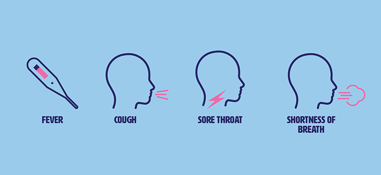

About
The COVID-19 pandemic, also known as the coronavirus pandemic, is an ongoing global pandemic of coronavirus disease 2019. The outbreak was first identified in Wuhan, China, in December 2019. The World Health Organization declared the outbreak a Public Health Emergency of International Concern on 30 January 2020 and a pandemic on 11 March. Till now it have affected more than 188 countries and territories.
The virus is primarily spread between people during close contact, most often via small droplets produced by coughing, sneezing, and talking. The droplets usually fall to the ground or onto surfaces rather than travelling through air over long distances. Transmission may also occur through smaller droplets that are able to stay suspended in the air for longer periods of time. Less commonly, people may become infected by touching a contaminated surface and then touching their face. It is most contagious during the first three days after the onset of symptoms, although spread is possible before symptoms appear, and from people who do not show symptoms.
The pandemic has caused global social and economic disruption, including the largest global recession since the Great Depression0 and global famines affecting 265 million people. It has led to the postponement or cancellation of sporting, religious, political, and cultural events, widespread supply shortages exacerbated by panic buying, and decreased emissions of pollutants and greenhouse gases. Schools, universities, and colleges have been closed either on a nationwide or local basis in 172 countries, affecting approximately 98.5 percent of the world's student population. Misinformation about the virus has circulated through social media and mass media.
Symptoms
The usual incubation period ranges from one to 14 days, and is most commonly five days. Some infected people have no symptoms, known as asymptomatic or presymptomatic carriers; transmission from such a carrier is considered possible. Symptoms of COVID-19 can be relatively non-specific; the two most common symptoms are fever (88 percent) and dry cough (68 percent). Less common symptoms include fatigue, respiratory sputum production (phlegm), loss of the sense of smell, loss of taste, shortness of breath, muscle and joint pain, sore throat, headache, chills, vomiting, coughing out blood, diarrhea, and rash.
Among those who develop symptoms, approximately one in five may become more seriously ill and have difficulty breathing. Emergency symptoms include difficulty breathing, persistent chest pain or pressure, sudden confusion, difficulty waking, and bluish face or lips; immediate medical attention is advised if these symptoms are present. Further development of the disease can lead to complications including pneumonia, acute respiratory distress syndrome, sepsis, septic shock, and kidney failure.

Causes
People are most infectious when they show symptoms, but may be infectious for up to two days before symptoms appear. They remain infectious an estimated seven to twelve days in moderate cases and an average of two weeks in severe cases. People can also transmit the virus without showing any symptom, but it is unclear how often this happens. A June 2020 review found that 40-45% of infected people are asymptomatic.
COVID-19 spreads primarily when people are in close contact and one person inhales small droplets produced by an infected person coughing, sneezing, talking, or singing. The WHO recommends 1 metre (3 ft) of social distance. Transmission may also occur through aerosols, smaller droplets that are able to stay suspended in the air for longer periods of time. Some medical procedures performed on COVID-19 patients in health facilities can generate those smaller droplets.
When the contaminated droplets fall to floors or surfaces they can, though less commonly, remain infectious if people touch contaminated surfaces and then their eyes, nose or mouth with unwashed hands. On surfaces the amount of viable active virus decreases over time until it can no longer cause infection, and surfaces are thought not to be the main way the virus spreads. It is unknown what amount of virus on surfaces is required to cause infection via this method, but it can be detected for up to four hours on copper, up to one day on cardboard, and up to three days on plastic and stainless steel. Surfaces are easily decontaminated with household disinfectants which kill the virus outside the human body or on the hands.
Prevention and treatment

Strategies for preventing transmission of the disease include maintaining overall good personal hygiene, washing hands, avoiding touching the eyes, nose, or mouth with unwashed hands, and coughing or sneezing into a tissue, and putting the tissue directly into a waste container. Those who may already have the infection have been advised to wear a surgical mask in public. Physical distancing measures are also recommended to prevent transmission. Health care providers taking care of someone who may be infected are recommended to use standard precautions, contact precautions, and eye protection.
Preventions
Hand washing:
Hand washing is recommended to prevent the spread of the disease. The CDC recommends that people wash hands often with soap and water for at least twenty seconds, especially after going to the toilet or when hands are visibly dirty; before eating; and after blowing one's nose, coughing, or sneezing. This is because outside the human body, the virus is killed by household soap, which bursts its protective bubble. CDC further recommended using an alcohol-based hand sanitiser with at least 60 percent alcohol by volume when soap and water are not readily available. The WHO advises people to avoid touching the eyes, nose, or mouth with unwashed hands.
Social distancing:
Social distancing (also known as physical distancing) includes infection control actions intended to slow the spread of disease by minimising close contact between individuals. Methods include quarantines; travel restrictions; and the closing of schools, workplaces, stadiums, theatres, or shopping centres. Individuals may apply social distancing methods by staying at home, limiting travel, avoiding crowded areas, using no-contact greetings, and physically distancing themselves from others.
Face masks and respiratory hygiene:
The CDC and WHO recommend individuals wear non-medical face coverings in public settings where there is an increased risk of transmission and where social distancing measures are difficult to maintain. This recommendation is meant to reduce the spread of the disease by asymptomatic and pre-symtomatic individuals and is complementary to established preventive measures such as social distancing. Face coverings limit the volume and travel distance of expiratory droplets dispersed when talking, breathing, and coughing. Many countries and local jurisdictions encourage or mandate the use of face masks or cloth face coverings by members of the public to limit the spread of the virus. Masks are also strongly recommended for those who may have been infected and those taking care of someone who may have the disease
Self-isolation:
Self-isolation at home has been recommended for those diagnosed with COVID-19 and those who suspect they have been infected. Health agencies have issued detailed instructions for proper self-isolation.
Surface cleaning:
Surfaces may be decontaminated with a number of solutions (within one minute of exposure to the disinfectant for a stainless steel surface), including 62-71 percent ethanol, 50-100 percent isopropanol, 0.1 percent sodium hypochlorite, 0.5 percent hydrogen peroxide, and 0.2-7.5 percent povidone-iodine. Other solutions, such as benzalkonium chloride and chlorhexidine gluconate, are less effective.
Treatment
Antiviral medications are under investigation for COVID-19 None has yet been shown to be clearly effective on mortality in published randomised controlled trials. However, remdesivir may affect the time it takes to recover from the virus. Emergency use authorisation for remdesivir was granted in the U.S. on 1 May, for people hospitalised with severe COVID-19. The interim authorisation was granted considering the lack of other specific treatments, and that its potential benefits appear to outweigh the potential risks.
Taking over-the-counter cold medications, drinking fluids, and resting may help alleviate symptoms. Depending on the severity, oxygen therapy, intravenous fluids, and breathing support may be required. The safety and effectiveness of convalescent plasma as a treatment option requires further research.
Impact
Economics:
The outbreak is a major destabilising threat to the global economy. Tourism is one of the worst affected sectors due to travel bans, closing of public places including travel attractions, and advice of governments against travel. Numerous airlines have cancelled flights due to lower demand, and British regional airline Flybe collapsed. The retail sector has been impacted globally, with reductions in store hours or temporary closures. Hundreds of millions of jobs could be lost globally. The outbreak has been blamed for several instances of supply shortages, stemming from globally increased usage of equipment to fight outbreaks, panic buying, and disruption to factory and logistic operations.
Culture:
The performing arts and cultural heritage sectors have been profoundly affected by the pandemic, impacting organisations' operations as well as individuals-both employed and independent-globally. Arts and culture sector organisations attempted to uphold their (often publicly funded) mission to provide access to cultural heritage to the community, maintain the safety of their employees and the public, and support artists where possible.
Politics:
The pandemic has affected the political systems of multiple countries, causing suspensions of legislative activities, isolations or deaths of multiple politicians, and rescheduling of elections due to fears of spreading the virus. Starting in late May, large-scale protests against police brutality in at least 200 U.S. cities and later worldwide in response to the killing of George Floyd raised concerns of a resurgence of the virus.
Education:
pandemic has affected educational systems worldwide, leading to the near-total closures of schools, universities and colleges. Most governments around the world have temporarily closed educational institutions in an attempt to contain the spread of COVID-19.[990] As of 7 June 2020, approximately 1.725 billion learners are currently affected due to school closures in response to the pandemic. According to UNICEF monitoring, 134 countries are currently implementing nationwide closures and 38 are implementing local closures, impacting about 98.5 percent of the world's student population. 39 countries' schools are currently open.